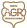

Toute l'équipe tient à remercier Armelle Gegaden pour son implication et son aide, nos écoles : Sciencescom, AGR et Polytech ainsi que nos professeurs pour leurs conseils. Merci aussi à Ouestmedia-lab d'avoir crée ce projet et d'avoir fait le lien entre les écoles et les médias.
Breaking Blab
Capucine
Amaury
Marion
Zoe
Yohann
Claire
Quentin
Benjamin
Passons à l'aspect moins technique des coulisses, l'histoire de notre groupe de travail. Nous sommes 8 étudiants nantais de 3 écoles différentes : Polytech, AGR et Sciencescom. Nous ne nous connaissions pas avant le projet et avons appris à travailler ensemble. Nous étions encadrés par Armelle Gegaden, journaliste au journal des entreprises.
Ce projet s'est déroulé sur deux semaines, pendant lesquelles nous nous sommes vus 5 jours en tout. Grâce à ce projet, nous avons mis en commun nos compétences et avons découvert d'autres méthodes de travail. Nous avons mené ce projet de A à Z avec l'aide d'Armelle, de la récolte des données au développement en passant par la création de la charte graphique.
Nous savons que notre projet fera réagir certaines villes, voire certaines entreprises. Chaque territoire peut avoir sa propre définition de l’économie numérique. Nous nous sommes appuyés sur les chiffres de l’Urssaf en triant par métropole et par codes NAF, détaillés ci-dessous.
Selon l’Insee, le secteur des technologies de l’information et de la communication (TIC) est défini par l’OCDE (Organisation de coopération et de développement économiques) comme le regroupement des secteurs :
Nous nous sommes appuyés sur cette classification pour dresser notre classement. Nous avons ajouté quelques codes: 7311 Z, 7312 Z, 7021 Z, 7022 Z, 4618Z, 4742Z, 7739Z. En ce qui concerne les villes sélectionnées, nous avons choisi les neuf premières métropoles labellisées par la French Tech. Nous nous sommes appuyés sur la loi du 27 janvier 2014 de modernisation des métropoles pour délimiter la taille des territoires.